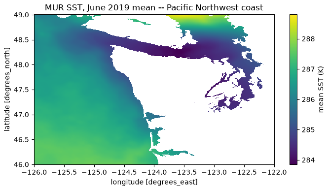

📖The definitions this course uses: reproducibility (same data, same code) vs replicability (new data, same question).
National Academies of Sciences, Engineering, and Medicine (2019). Reproducibility and Replicability in Science. The National Academies Press.
✓Doing it right: a one-page card stating what a model is for and where it breaks — now expected on every model hub.
Mitchell, M., et al. (2019). Model cards for model reporting. Proceedings of FAT* ’19, 220–229.
✓A whole conference made reproducibility a submission checklist — and measured what changed.
Pineau, J., et al. (2021). Improving reproducibility in machine learning research. Journal of Machine Learning Research, 22(164), 1–20.
✗Retracted within a year: an ocean-warming headline whose systematic errors were treated as random — caught by an outside reader, not the workflow.
Resplandy, L., et al. (2018). Quantification of ocean heat uptake from changes in atmospheric O₂ and CO₂ composition. Nature, 563, 105–108. Retracted 2019 (Retraction Note: Nature, 573, 614) after the reported uncertainties proved underestimated.
Workflow discipline has a literature — these three are its spine, and your final report is graded against their ideas.
A bug reproduces perfectly
Reproducible = same data, code, environment → same result within a stated tolerance
Reproducibility certifies the pipeline is deterministic and complete — not that it is right
Agents write code faster than you can review it → make the checks executable: lock file, scripted transforms, CI
When you delegate the typing, you must not delegate the verification.
Chapter 5 in two numbers, part 1
30 lines a complete experiment tracker — params, metrics, artifacts, code version
0.002 the “winning” configuration’s margin — smaller than the seed-to-seed spread
A difference smaller than your run-to-run variance is not a finding. Know the spread before you compare.
The data and the model have versions too
One hash: pooch.retrieve(url, known_hash=…) — upstream file changes, your analysis fails loudly instead of drifting silently
A saved model = weights + config + data version + metrics + seed — provenance travels in the bundle
Ten-line model card: intended use and known limits — the lines only you can write
“The model” in your report must mean a specific version a machine can retrieve and rerun.
106 TiB, opened from a laptop

MUR sea-surface temperature (JPL/NASA PO.DAAC, AWS Open Data): a 106.3 TiB Zarr store, opened in 12.9 s by reading 10.3 KiB of metadata.
How many bytes actually moved?
60.6 MiB moved over the network — ten days, Pacific Northwest shelf
30.4 TiB the temperature variable those bytes were pulled from
One part in ~525,000. The answer itself: 9.2 MiB in RAM — the 6× overhead is chunk granularity, the tax of object storage.
Laptop, cluster, or cloud — the deciding question is always: how many bytes must move?
Movement 2 — the words are part of the result
The measured finding:detector recovers 92% of M>2 events at 1 false alarm/day; recall drops to 60% below SNR 3
✗ “Our AI detects 92% of earthquakes.”
✓ “9 out of 10 earthquakes above magnitude 2, with about one false alert a day for an analyst to dismiss.”
Jargon translation swaps words. Claim translation keeps the truth conditions. Both sentences are plain — only one is true.
Five questions, and the direction of failure
Who could act on this — named roles, not “stakeholders”
What decision changes — if none, say “contribution to knowledge” honestly
What goes wrong, in which direction, on whom — a missed flood is not a false alarm
Footprint vs the cheap baseline · what responsible deployment still lacks
Model errors have a direction, and each direction lands on different people — cost both, name both.
Ship-it checklist
Discipline
The one-liner
Geoscience example
Reproducibility
rerun matches within stated tolerance
fresh clone re-derives the GNSS velocities
Tracking
every number traces to a run file
“the good run” is a file, not a memory
Versioning
data hashed, model bundled + carded
detector_v1.2.0: “not for early warning”
Data at scale
move the query, not the archive
60.6 MiB answers a 30.4 TiB question
Translation
claims keep their truth conditions
“9 in 10 above M2,” not “92% of earthquakes”
Impact
both failure directions costed, on named people
a missed flood ≠ a false alarm
This table is the final-report rubric in disguise — every row is a section your report and presentation must survive.
Today’s work — no notebook, two conversations
Ch 5 discussion (~30 min): run your project down the 5.1 checklist — which rows pass today? Which one is cheapest to fix before Dec 16?
Translate (~15 min): your headline claim, for peers and for one non-peer audience — then swap with another team and hunt broken claims
Start the impact statement: answer the five questions in one sentence each, tonight